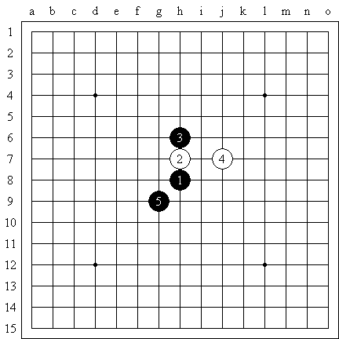

开局骗着
首页
江苏五子棋
#1 开局骗着 作者：江南新绿 发表时间：2008-8-6 16:34:40

去下下看，有多少人能够中奖的？
#2 Re:开局骗着 作者：雅匪 发表时间：2008-8-6 22:31:11
俺一头雾水啊，怎么算中奖，奖金多少都么说啊
#3 Re:开局骗着 作者：江南新绿 发表时间：2008-8-6 22:42:50
去苏州吗？
#4 Re:开局骗着 作者：雅匪 发表时间：2008-8-7 0:53:18
：）这与...这什么逻辑关系哈
#5 Re:开局骗着 作者：疏星终结 发表时间：2008-8-7 2:57:58
=======上图对应的爱五子棋谱代码如下，以便你拆解：========
h8h9h10j9g7i9g9
======================================================这样就重奖了，黑必胜
#6 Re:开局骗着 作者：黄药师 发表时间：2009-6-28 21:18:53
谁详细解释一下
#7 Re:开局骗着 作者：丝袜伯爵 发表时间：2009-6-29 11:01:32
可我不会这么走6，这个6走的一点道理也没有
#8 Re:开局骗着 作者：茗弈小刀 发表时间：2009-6-29 11:21:55
5是骗吧？没看出白怎么杀。
#9 Re:开局骗着 作者：方圆之外 发表时间：2009-6-30 11:39:23
大体看了下。
=======上图对应的爱五子棋谱代码如下，以便你拆解：========
h8h9h10j9g7i8
======================================================就这个6好像没简单杀。
=======上图对应的爱五子棋谱代码如下，以便你拆解：========
h8h9h10j9g7i8i9j10j8k7i7
======================================================这个11唯一。之后是黑优吧。是不是骗这个11？
#10 Re:开局骗着 作者：小天元子 发表时间：2009-6-30 17:09:03
新绿LS，这个5啥结论呢？
#11 Re:开局骗着 作者：自来水 发表时间：2009-6-30 17:55:40
发现了一个诡异的10
=======上图对应的爱五子棋谱代码如下，以便你拆解：========
h8h9h10j9g7i8i9j10j8g11
======================================================不要直接和我说黑必胜。。。这里有点问题
#12 Re:开局骗着 作者：自来水 发表时间：2009-6-30 17:59:16
似乎问题就出在这里，大家快来围剿！！
#13 Re:开局骗着 作者：自来水 发表时间：2009-6-30 18:42:21
至少现在白优了,但是白必了吗???
#14 Re:开局骗着 作者：江南新绿 发表时间：2009-6-30 18:48:32
谢谢LS顶贴
=======上图对应的爱五子棋谱代码如下，以便你拆解：========
h8h9h10j9g7i8i9j10j8g11
======================================================这个黑棋有唯一胜，其他防点似乎都必败的。
#15 Re:开局骗着 作者：自来水 发表时间：2009-6-30 18:54:48
???哪个,还有唯一胜 ,摆一个11看看
,摆一个11看看
#16 Re:开局骗着 作者：茗弈如梦 发表时间：2009-6-30 18:56:16
 等着掉饼
等着掉饼
#17 Re:开局骗着 作者：小天元子 发表时间：2009-6-30 20:51:13
=======上图对应的爱五子棋谱代码如下，以便你拆解：========
h8h9h10j9g7i8i9j10j8k7i7g10j7h7k10g9
======================================================新绿LS对此型有何看法？
=======上图对应的爱五子棋谱代码如下，以便你拆解：========
h8h9h10f9i7g8i9i6e10i10f7g9
======================================================此型又如何，寒星求学中……
#18 Re:开局骗着 作者：小天元子 发表时间：2009-6-30 21:04:50
直接开门见山吧：我觉得这个5的结论是棋势交换，胶着，然后走向平庸……胶着前的混乱交换局面，里面坑坑洼洼非常多，LS所说的中奖想必就是指这个棋势交换过程吧
#19 Re:开局骗着 作者：江南新绿 发表时间：2009-6-30 21:08:30
火车上和狮子走这个局面，自己研究的东西还是走丢了。。。寒一个。
17楼下图黑棋一路唯一，不过到最后交换超多。。。我自己都算不清了。需要地毯。最后的局面是黑棋有一个交换不掉的局面，不是黑杀，就是白胜，不过实战很难说。
#20 Re:开局骗着 作者：小天元子 发表时间：2009-6-30 21:13:00
=======上图对应的爱五子棋谱代码如下，以便你拆解：========
h8h9h10f9i7g8i9i6e10i10f7g9g11j8e9
======================================================此7就算白胜，关于此型的探讨依然还将继续，另一个7若无妙手将走向平庸
#21 Re:开局骗着 作者：江南新绿 发表时间：2009-6-30 21:49:14
你觉得哪个14好？里面有很多交换哦。
#22 Re:开局骗着 作者：小天元子 发表时间：2009-6-30 21:50:54
头大，保持混沌吧，朦胧又有神秘美感
#23 Re:Re:开局骗着 作者：自来水 发表时间：2009-7-1 13:21:56
引用：
原文由 江南新绿 发表于 2009-6-30 21:08:30 :
火车上和狮子走这个局面，自己研究的东西还是走丢了。。。寒一个。
17楼下图黑棋一路唯一，不过到最后交换超多。。。我自己都算不清了。需要地毯。最后的局面是黑棋有一个交换不掉的局面，不是黑杀，就是白胜，不过实战很难说。


#24 Re:开局骗着 作者：掉渣的懒 发表时间：2009-8-17 11:23:51
这个11手必败的了，图片不会传给大家看，教我下汗~~~
#25 Re:开局骗着 作者：掉渣的懒 发表时间：2009-8-18 12:37:22
=======上图对应的爱五子棋谱代码如下，以便你拆解：========
h8h9h10j9g7i8i9j10j8k7i7h7k10k6l5k8k9h6j6k5k4g8
======================================================
#26 Re:开局骗着 作者：掉渣的懒 发表时间：2009-8-18 12:38:21
=======上图对应的爱五子棋谱代码如下，以便你拆解：========
h8h9h10j9g7i8i9j10j8k7i7h7k10k6j7k5k8j5
======================================================
#27 Re:开局骗着 作者：掉渣的懒 发表时间：2009-8-18 12:42:37
=======上图对应的爱五子棋谱代码如下，以便你拆解：========
h8h9h10j9g7i8i9j10j8k7i7h7k10k6j7k8k5j6h6g5f10
======================================================晕，抱歉上次没看清楚这个有反的